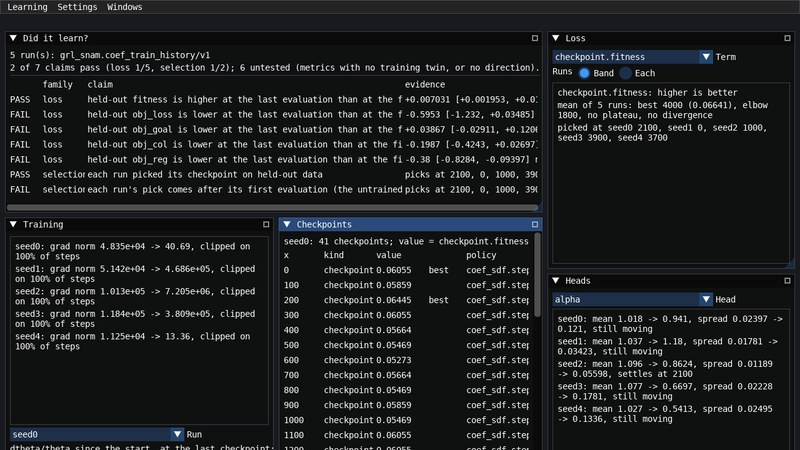
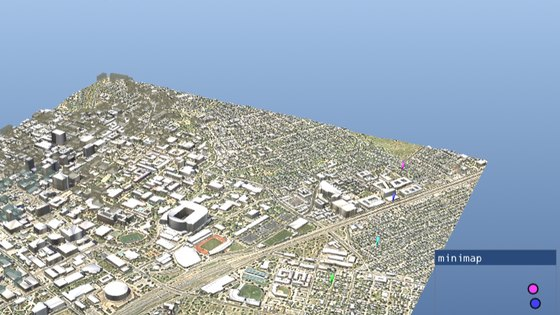

GRL-SNAM
Geometric reinforcement learning for navigation and mapping: a navigator that drives on a signed-distance field built from raw city geometry, with an energy-based policy over its coefficients.
Figures

grl-snam pipeline takes a terrain and
building bundle through SDF construction and training to a multi-goal free-drive over Austin, with a
live HUD of the coefficients α β γ, clearance and speed.

In your browser
These pages run the code itself, compiled to WebAssembly: nothing is installed, and every file they load comes from this site.

Did it learn? The learning instruments, live
GRL-SNAM's own grl-snam ariadne learn, running in the page on CPython 3.12, numpy
and libcvc's Ariadne (ariglx-web). It reads the training histories of GRL-SNAM's
learning check
and shows each run's held-out curves with their marks, its gradient norms, its checkpoints and its
heads, and learn-report's claims, each pass or fail.
The first visit downloads about 34 MB; later visits come from the browser's cache.

City swarm
800 vehicles cross a foggy city with no global plan, on GRL-SNAM's published coefficient net
(coef_sdf.cvcnav) and libcvc's C++ navigator. Tune agents, fog and belief live.

City drive
A few dozen vehicles in colour-coded convoys thread downtown Austin to six rally points with no global plan. Drag a rally point to re-route a convoy live.

Fog of war: the ghost wall
A vehicle detours a phantom wall its stale map shows, then erases it cell by cell as its sensor clears the ground; a second scenario has a vehicle crossing its path.
More WebAssembly demos are in libcvc's gallery.
Archive: July to August 2026
The first three demo deliverables, kept as they were published on 2026-08-14. Each page's films play inline, and every number on them replays from a recorded trace.
The CLI and live-metrics demo
A raw world model to a rendered multi-goal free-drive with a live HUD, in one command.
Fog of war: the map is a belief
A ghost wall, a mid-drive blocker and a moving unit, each scored against the truth.
Squads at city scale
A convoy, a pursuit and an eight-vehicle rendezvous, with private beliefs and live targets.
The August project page and poster, as published.
Built from CVC-Lab/GRL-SNAM@@GRL_SNAM_SHORT@ and libcvc @LIBCVC_REF@ on @BUILT@ · site source
Geometry © OpenStreetMap contributors (ODbL) · terrain SRTM (US public domain)